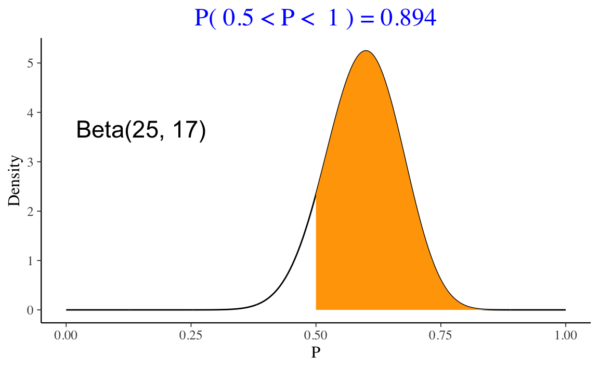

Capitolo 4 Criterio di informazione e convalida incrociata
Nel Capitolo precedente abbiamo visto che la (3.6) fornisce una sovrastima della \(\elpd\). Il modo migliore per stimare \(\elpd\) è raccogliere un nuovo campione indipendente di dati, che si ritiene condivida lo stesso processo di generazione dei dati del campione corrente, e stimare \(\elpd\) sul nuovo campione. Questa procedura è chiamata out-of-sample validation. Il problema, però, è che solitamente non abbiamo le risorse per raccogliere un nuovo campione di osservazioni. Di conseguenza, gli statistici hanno messo a punto vari metodi per evitare la sovrastima della \(\elpd\) che deriva dal solo utizzo del campione corrente. Ci sono due approcci generali:
- l’introduzione di un fattore di correzione;
- la convalida incrociata cosiddetta K-fold.
Lo scopo del presente Capitolo è di fornire una breve introduzione ai criteri dell’informazione e alla procedura della convalida incrociata.
4.1 AIC, DIC e WAIC
Allo scopo di evitare la sovrastima della (3.6), le statistiche Akaike Information Criterion (AIC), Deviance Information Criterion (DIC) e Widely Applicable Information Criterion (WAIC) introducono un fattore di correzione. Le statistiche DIC e WAIC sono più complesse di AIC, ma producono un’approssimazione migliore. Tuttavia, i valori AIC, DIC e WAIC sono spesso molto simili tra loro. Per convenienza, dunque, qui ci accontenteremo di esaminare in dettaglio la statistica più semplice, ovvero AIC.
4.1.1 Criterio d’informazione di Akaike
Il criterio d’informazione di Akaike (in inglese Akaike information criterion, indicato come AIC) fornisce un metodo molto semplice per approssimare \(\elpd\).
Definizione 4.1 Il criterio d’informazione di Akaike è definito come
\[\begin{equation} AIC = -2 \log p(y \mid \hat{\theta}_{MLE}) + 2k, \end{equation}\]
dove \(k\) è il numero di parametri stimati nel modello e \(p(y \mid \hat{\theta}_{MLE})\) è il valore massimizzato della funzione di verosimiglianza del modello stimato.
Dividendo per -2, otteniamo \(\elpd_{AIC}\):
\[\begin{equation} \widehat{\elpd}_{AIC} = \log p(y \mid \hat{\theta}_{MLE}) - k, \end{equation}\]
dove \(k\) è il fattore di correzione introdotto per evitare la sovrastima discussa in precedenza.
AIC è di interesse principalmente storico e produce una approssimazione attendibile di \(\elpd\) quando:
- le distribuzioni a priori sono non informative;
- la distribuzione a posteriori è approssimativamente gaussiana multivariata;
- la dimensione \(n\) del campione è molto maggiore del numero \(k\) dei parametri.
Esempio 4.1 Per meglio comprendere la statistica \(\widehat{\elpd}_{AIC}\), esaminiamo un esempio discusso da Gelman, Hwang, and Vehtari (2014). Sia \(y_1, \dots, y_n \sim \mathcal{N}(\mu, 1)\) un campione di osservazioni. Nel caso di una distribuzione a priori non-informativa \(p(\theta) \propto 1\), la stima di massima verosimiglianza è \(\bar{y}\). La verosimiglianza è
\[ f(Y \mid \mu, \sigma) = \prod_{i=1}^n f(y \mid \mu, \sigma) \]
e la log-verosimiglianza diventa
\[ \ell(Y \mid \mu, \sigma) = \sum_{i=1}^n \log (f(y \mid \mu, \sigma)). \] Ovvero,
\[\begin{align} \ell(Y \mid \mu, \sigma) &= \sum_{i=1}^n \log \left( \frac {1}{{\sqrt {2\pi\sigma^2 }}}\exp \left(-{\frac {1}{2}}{\frac {(y_i-\mu )^{2}}{\sigma^{2}}}\right) \right)\notag\\ &= \sum_{i=1}^n \log \left( \frac {1}{{\sqrt {2\pi \sigma^2}}} \right) - \sum_{i=1}^n{\frac {1}{2}}{\frac {(y_i-\mu )^{2}}{\sigma ^{2}}} \notag\\ &= \sum_{i=1}^n \log \left( \frac {1}{{\sqrt {2\pi \sigma^2}}} \right) - \frac{1}{2\sigma^2}\sum_{i=1}^n (y_i-\mu )^{2} \notag \\ &= \sum_{i=1}^n \log (1) - \sum_{i=1}^n\log \sqrt{2\pi \sigma^2} - \frac{1}{2\sigma^2}\sum_{i=1}^n (y_i-\mu )^{2} \notag\\ &= - \sum_{i=1}^n\frac{1}{2} \log (2\pi\sigma^2) - \frac{1}{2\sigma^2}\sum_{i=1}^n (y_i-\mu )^{2} \notag\\ &= - \frac{n}{2} \log (2\pi\sigma^2) - \frac{1}{2\sigma^2}\sum_{i=1}^n (y_i-\mu )^{2}. \notag \end{align}\]
Se \(y \sim \mathcal{N}(\mu, 1)\), usando lo stimatore di massima verosimiglianza per \(\mu\), la log-verosimiglianza diventa
\[\begin{align} \log p(y \mid \hat{\theta}_{MLE}) &= -\frac{n}{2} \log (2\pi) - \frac{1}{2}\sum_{i=1}^n (y_i - \bar{y})^2 \notag\\ &= -\frac{n}{2} \log (2\pi) - \frac{1}{2} (n-1)s_y^2, \end{align}\]
dove \(s_y^2\) è la varianza campionaria.
Nel caso di un modello gaussiano con con varianza nota e una distribuzione a priori uniforme viene stimato un solo parametro, per cui
\[\begin{align} \widehat{\elpd}_{AIC} &= \log p(y \mid \hat{\theta}_{MLE}) - k \notag \\ &= -\frac{n}{2} \log (2\pi) - \frac{1}{2} (n-1)s_y^2 - 1. \end{align}\]
4.2 Convalida incrociata K-fold
La sovrastima della (3.6) può anche essere evitata usando una tecnica chiamata K-fold cross-validation. Mediante questo metodo vengono stimati i parametri del modello tralasciando una porzione di osservazioni (chiamata fold) dal campione per poi valutare il modello sulle osservazioni che sono state escluse. Una stima complessiva dell’accuratezza si ottiene poi calcolando la media del punteggio di accuratezza ottenuto in ogni fold. Il numero minimo di fold è 2; all’altro estremo, è possibile impiegare una singola osservazione in ciascun fold e adattare il modello tante volte (\(n\)) quante sono le singole osservazioni. Questa strategia è chiamata leave-one-out cross-validation (LOO-CV).
4.2.1 Importance sampling
La strategia LOO-CV è computazionalmente onerosa (ovvero, richiede un tempo di esecuzione molto lungo). È però possibile approssimare LOO-CV mediante un metodo chiamato Pareto-smoothed importance sampling cross-validation [PSIS; Vehtari, Gelman, and Gabry (2017)]. Tralasciando qui i dettagli matematici, l’intuizione di base è che PSIS fa leva sul punteggio di “importanza” posseduto da ciascuna osservazione all’interno della distribuzione a posteriori. Per “importanza” si intende il fatto che alcune osservazioni hanno un impatto maggiore sulle proprietà della distribuzione a posteriori di altre: se viene rimossa un’osservazione importante, le proprietà della distribuzione a posteriori cambiano molto; se viene rimossa un’osservazione poco importante, la distribuzione a posteriori cambia poco. L’“importanza” così intesa viene chiamata “peso” (weight) e tali pesi vengono utilizzati per stimare l’accuratezza out-of-sample del modello. PSIS-LOO-CV richiede che il modello venga adattato una volta soltanto ai dati e fornisce una stima della devianza out-of-sample che evita la sovrastima della (3.6). Inoltre, PSIS-LOO-CV fornisce un feedback sulla propria affidabilità identificando le osservazioni i cui pesi molto elevati potrebbero rendere imprecisa la predizione.
Valori \(\widehat{\elpd}_{\LOO}\) più grandi indicano una maggiore accuratezza predittiva. In alternativa, anziché considerare \(\widehat{\elpd}\), è possibile usare la quantità \(-2 \cdot \widehat{\elpd}\), la quale è chiamata LOO Information Criterion (LOOIC). In questo secondo caso, valori LOOIC più piccoli sono da preferire.
La quantità \(\widehat{\elpd}_{\LOO}\) viene calcolata dai pacchetti loo e brms ed è chiamata elpd_loo o elpd_kfold. È anche possibile calcolare la differenza della quantità elpd_loo per modelli alternativi, insieme alla deviazione standard della distribuzione campionaria di tale differenza.
4.3 Confronto tra AIC e LOO-CV
Per fare un esempio, faremo qui un confronto tra \(\widehat{\elpd}_{AIC}\) e \(\widehat{\elpd}_{LOO-CV}\). Esaminiamo nuovamente l’associazione tra il QI dei figli e il QI delle madri nel campione di dati discusso da Gelman, Hill, and Vehtari (2020). Una tale relazione può essere descritta da un modello di regressione nel quale la \(y\) corrisponde al QI dei figli e la \(x\) al QI delle madri.
Leggiamo i dati in :
library("foreign")
df <- read.dta(here("data", "kidiq.dta"))
df$y <- scale(df$kid_score)[, 1]
df$x1 <- scale(df$mom_iq)[, 1]
head(df)
#> kid_score mom_hs mom_iq mom_work mom_age y x1
#> 1 65 1 121.11753 4 27 -1.06793237 1.4078352
#> 2 98 1 89.36188 4 25 0.54886757 -0.7092079
#> 3 85 1 115.44316 4 27 -0.08805362 1.0295443
#> 4 83 1 99.44964 3 25 -0.18604150 -0.0366907
#> 5 115 1 92.74571 4 27 1.38176451 -0.4836193
#> 6 98 0 107.90184 1 18 0.54886757 0.5267892Dato che AIC non è una statistica bayesiana, può essere calcolata mediante strumenti frequentisti:
m1_freq <- lm(y ~ x1, data = df)
AIC(m1_freq) / -2
#> [1] -569.6384Per ottenere LOO-CV adattiamo ai dati un modello di regressione bayesiano:
modelString = "
data {
int<lower=0> N;
vector[N] x1;
vector[N] y;
}
parameters {
real alpha;
real beta1;
real<lower=0> sigma;
}
transformed parameters {
vector[N] mu;
for (n in 1:N){
mu[n] = alpha + beta1*x1[n];
}
}
model {
alpha ~ normal(0, 1);
beta1 ~ normal(0, 1);
sigma ~ cauchy(0, 1);
y ~ normal(mu, sigma);
}
generated quantities {
vector[N] y_rep;
vector[N] log_lik;
for (n in 1:N){
y_rep[n] = normal_rng(mu[n], sigma);
log_lik[n] = normal_lpdf(y[n] | x1[n] * beta1, sigma);
}
}
"
writeLines(modelString, con = "code/simplereg.stan")data1_list <- list(
N = length(df$kid_score),
y = df$y,
x1 = df$x1
)file1 <- file.path("code", "simplereg.stan")mod1 <- cmdstan_model(file1)Eseguiamo il campionamento MCMC:
fit1 <- mod1$sample(
data = data1_list,
iter_sampling = 4000L,
iter_warmup = 2000L,
seed = SEED,
chains = 4L,
parallel_chains = 2L,
cores = 4L,
refresh = 0,
thin = 1
)Calcoliamo infine la quantità \(\widehat{\elpd}_{LOO-CV}\):
loo1_result <- fit1$loo(cores = 4)
print(loo1_result)
#>
#> Computed from 16000 by 434 log-likelihood matrix
#>
#> Estimate SE
#> elpd_loo -568.6 14.5
#> p_loo 1.9 0.2
#> looic 1137.2 28.9
#> ------
#> Monte Carlo SE of elpd_loo is 0.0.
#>
#> All Pareto k estimates are good (k < 0.5).
#> See help('pareto-k-diagnostic') for details.Si noti la somiglianza tra \(\widehat{\elpd}_{LOO-CV}\) e \(\widehat{\elpd}_{AIC}\). In conclusione, possiamo dunque dire che \(\widehat{\elpd}_{LOO-CV}\) è la risposta bayesiana allo stesso problema che trova una soluzione frequentista nella statistica \(\widehat{\elpd}_{AIC}\).
4.4 Confronto tra modelli mediante LOO-CV
Come menzionato in precedenza, l’obiettivo centrale della misurazione dell’accuratezza predittiva è il confronto di modelli. Una volta capito come calcolare LOO-CV con un condice scritto in linguaggio Stan, svolgeremo ora un confronto di modelli.7
Considereremo qui un confronto di modelli di regressione. Il modello di regressione discusso nel Paragrafo precedente prevede il QI dei bambini dal QI delle madri. Aggiungiamo a tale modello un secondo predittore che corrisponde all’età della madre. L’aggiunta di tale predittore migliori l’accuratezza predittiva del modello?
modelString = "
data {
int<lower=0> N;
vector[N] x1;
vector[N] x2;
vector[N] y;
}
parameters {
real alpha;
real beta1;
real beta2;
real<lower=0> sigma;
}
transformed parameters {
vector[N] mu;
for (n in 1:N){
mu[n] = alpha + beta1*x1[n] + beta2*x2[n];
}
}
model {
alpha ~ normal(0, 1);
beta1 ~ normal(0, 1);
beta2 ~ normal(0, 1);
sigma ~ cauchy(0, 1);
y ~ normal(mu, sigma);
}
generated quantities {
vector[N] y_rep;
vector[N] log_lik;
for (n in 1:N){
y_rep[n] = normal_rng(mu[n], sigma);
log_lik[n] = normal_lpdf(y[n] | x1[n] * beta1 + x2[n] * beta2, sigma);
}
}
"
writeLines(modelString, con = "code/mreg2.stan")df$x2 <- scale(df$mom_age)[, 1]data2_list <- list(
N = length(df$kid_score),
y = df$y,
x1 = df$x1,
x2 = df$x2
)file2 <- file.path("code", "mreg2.stan")# compile model
mod2 <- cmdstan_model(file2)# Running MCMC
fit2 <- mod2$sample(
data = data2_list,
iter_sampling = 4000L,
iter_warmup = 2000L,
seed = SEED,
chains = 4L,
parallel_chains = 2L,
cores = 4L,
refresh = 0,
thin = 1
)fit2$summary(c("alpha", "beta1", "beta2", "sigma"))
#> # A tibble: 4 × 10
#> variable mean median sd mad q5 q95 rhat ess_bulk
#> <chr> <dbl> <dbl> <dbl> <dbl> <dbl> <dbl> <dbl> <dbl>
#> 1 alpha -0.000255 -0.000162 0.0431 0.0427 -0.0714 0.0705 1.00 19419.
#> 2 beta1 0.442 0.442 0.0427 0.0427 0.372 0.512 1.00 17850.
#> 3 beta2 0.0515 0.0514 0.0427 0.0428 -0.0179 0.121 1.00 16802.
#> 4 sigma 0.896 0.895 0.0305 0.0303 0.848 0.948 1.00 19032.
#> # … with 1 more variable: ess_tail <dbl>loo2_result <- fit2$loo(cores = 4)
print(loo2_result)
#>
#> Computed from 16000 by 434 log-likelihood matrix
#>
#> Estimate SE
#> elpd_loo -568.9 14.5
#> p_loo 3.0 0.3
#> looic 1137.8 29.0
#> ------
#> Monte Carlo SE of elpd_loo is 0.0.
#>
#> All Pareto k estimates are good (k < 0.5).
#> See help('pareto-k-diagnostic') for details.Consideriamo infine un terzo modello che utilizza come predittori, oltre al QI della madre, una variabile dicotomica (codificata 0 o 1) che distingue madri che hanno completato le scuole superiori da quelle che non le hanno completate. Nuovamente, la domanda è se l’aggiunta di tale predittore migliori la capacità predittiva del modello.
modelString = "
data {
int<lower=0> N;
vector[N] x1;
vector[N] x3;
vector[N] y;
}
parameters {
real alpha;
real beta1;
real beta3;
real<lower=0> sigma;
}
transformed parameters {
vector[N] mu;
for (n in 1:N){
mu[n] = alpha + beta1*x1[n] + beta3*x3[n];
}
}
model {
alpha ~ normal(0, 1);
beta1 ~ normal(0, 1);
beta3 ~ normal(0, 1);
sigma ~ cauchy(0, 1);
y ~ normal(mu, sigma);
}
generated quantities {
vector[N] y_rep;
vector[N] log_lik;
for (n in 1:N){
y_rep[n] = normal_rng(mu[n], sigma);
log_lik[n] = normal_lpdf(y[n] | x1[n] * beta1 + x3[n] * beta3, sigma);
}
}
"
writeLines(modelString, con = "code/mreg3.stan")df$x3 <- df$mom_hsdata3_list <- list(
N = length(df$kid_score),
y = df$y,
x1 = df$x1,
x3 = df$x3
)file3 <- file.path("code", "mreg3.stan")mod3 <- cmdstan_model(file3)fit3 <- mod3$sample(
data = data3_list,
iter_sampling = 4000L,
iter_warmup = 2000L,
seed = SEED,
chains = 4L,
parallel_chains = 2L,
cores = 4L,
refresh = 0,
thin = 1
)fit3$summary(c("alpha", "beta1", "beta3", "sigma"))
#> # A tibble: 4 × 10
#> variable mean median sd mad q5 q95 rhat ess_bulk ess_tail
#> <chr> <dbl> <dbl> <dbl> <dbl> <dbl> <dbl> <dbl> <dbl> <dbl>
#> 1 alpha -0.225 -0.224 0.0947 0.0945 -0.382 -0.0705 1.00 8433. 9191.
#> 2 beta1 0.415 0.414 0.0449 0.0450 0.341 0.488 1.00 10941. 10324.
#> 3 beta3 0.286 0.285 0.108 0.108 0.111 0.465 1.00 8452. 8606.
#> 4 sigma 0.890 0.889 0.0302 0.0302 0.842 0.941 1.00 10828. 9623.loo3_result <- fit3$loo(cores = 4)
print(loo3_result)
#>
#> Computed from 16000 by 434 log-likelihood matrix
#>
#> Estimate SE
#> elpd_loo -584.2 16.4
#> p_loo 7.5 0.6
#> looic 1168.3 32.8
#> ------
#> Monte Carlo SE of elpd_loo is 0.0.
#>
#> All Pareto k estimates are good (k < 0.5).
#> See help('pareto-k-diagnostic') for details.Per eseguire un confronto tra modelli in termini della loro capacità predittiva esaminiamo la differenza di LOO-CV tra coppie di modelli. Le seguenti istruzioni \(\R\) producono la quantità elpd_diff, ovvero la differenza tra stime della \(\elpd\) fornite da due modelli. Il primo argomento della funzione loo_compare() specifica il modello che viene usato come confronto. Nella prima riga dell’output, il valore elpd_diff è 0 (cioè, \(x − x = 0\)). Nelle righe successive sono riportate le differenze rispetto al modello di confronto (in questo caso, il modello 1). La colonna se_diff riporta l’errore standard di tali differenze.
L’incertezza della stima dell’accuratezza out-of-sample si distribuisce in maniera approssimativamente normale con media uguale al valore riportato dal software e deviazione standard uguale a ciò che è indicato nell’output come errore standard. Quando il campione è piccolo, questa approssimazione produce una forte sottostima dell’incertezza, ma fornisce comunque una stima migliore di AIC, DIC e WAIC.
w <- loo_compare(loo1_result, loo2_result, loo3_result)
print(w)
#> elpd_diff se_diff
#> model1 0.0 0.0
#> model2 -0.3 1.3
#> model3 -15.6 6.0Per interpretare l’output, usiamo il criterio suggerito da Gelman et al. (1995): consideriamo “credibile” una differenza se elpd_diff è almeno due volte maggiore di se_diff. Nel caso presente, dunque, il confronto tra il modello 2 e il modello 1 indica che la quantità elpd_diff è molto piccola rispetto al suo errore standard.
Questo accade se un predittore è associato in modo trascurabile con la variabile dipendente. I dati presenti, dunque, non offrono alcuna evidenza che aggiungere dell’età della madre come predittore migliori la capacità predittiva del modello. Nel confronto tra modello 3 e modello 1, invece, la quantità elpd_diff è maggiore di due volte il valore dell’errore standard. Questo suggerisce un incremento della capacità predittiva del modello quiando il livello di istruzione della madre viene incluso tra i predittori.
È anche possibile calcolare l’intervallo di credibilità per elpd_diff:
15.5 + c(-1, 1) * qnorm(.95, 0, 1) * 6.0
#> [1] 5.630878 25.3691224.5 Outlier
Si è soliti pensare che la maggior parte delle osservazioni del campione sia prodotta da un unico meccanismo generatore dei dati, mentre le rimanenti osservazioni sono la realizzazione di un diverso processo stocastico. Le osservazioni che appartengono a questo secondo gruppo si chiamano outlier. È dunque necessario identificare gli outlier e limitare la loro influenza sull’inferenza.8
Poniamoci ora il problema di identificare gli outlier con la tecnica PSIS-LOO-CV. Quando PSIS-LOO-CV viene calcolato con il pacchetto loo, l’output riporta il parametro di forma della distribuzione di Pareto (valore k). Tale valore può essere utilizzato per identificare gli outlier. Infatti, il valore k valuta, per ciascun punto del campione, l’approssimazione usata da PSIS-LOO-CV. Se \(k < 0.5\), i pesi di importanza vengono stimati in modo accurato; se il valore \(k\) di Pareto di un punto è \(> 0.7\), i pesi di importanza possono essere inaccurati. Le osservazioni con \(k > 0.7\) sono dunque osservazioni outlier.
Per fare un esempio concreto, introduciamo nel campione dell’esempio precedente una singola osservazione outlier.
df1 <- df
dim(df1)
#> [1] 434 9
df1$x1[434] <- 10
df1$y[434] <- 10Sistemiamo i dati nel formato appropriato per Stan:
data1a_list <- list(
N = length(df1$kid_score),
y = df1$y,
x1 = df1$x1
)Adattiamo nuovamente il modello 1 ad un campione di dati che contiene un outlier.
fit1a <- mod1$sample(
data = data1a_list,
iter_sampling = 4000L,
iter_warmup = 2000L,
seed = SEED,
chains = 4L,
parallel_chains = 2L,
cores = 4L,
refresh = 0,
thin = 1
)loo1a_result <- fit1a$loo(cores = 4)Una tabella diagnostica che riassume le stime dei parametri di forma della distribuzione di Pareto si ottiene nel modo seguente:
print(loo1a_result)
#>
#> Computed from 16000 by 434 log-likelihood matrix
#>
#> Estimate SE
#> elpd_loo -586.2 19.9
#> p_loo 6.6 5.0
#> looic 1172.5 39.8
#> ------
#> Monte Carlo SE of elpd_loo is NA.
#>
#> Pareto k diagnostic values:
#> Count Pct. Min. n_eff
#> (-Inf, 0.5] (good) 433 99.8% 10708
#> (0.5, 0.7] (ok) 0 0.0% <NA>
#> (0.7, 1] (bad) 1 0.2% 75
#> (1, Inf) (very bad) 0 0.0% <NA>
#> See help('pareto-k-diagnostic') for details.Un grafico che riporta le stime dei parametri di forma della distribuzione di Pareto per ciascuna osservazione è dato da:
plot(loo1a_result)
Il valore k stimato da PSIS-LOO-CV mette chiaramente in luce il fatto che il valore introdotto nel campione è un outlier. L’indice dell’osservazione outlier è identificato con:
pareto_k_ids(loo1a_result, threshold = 0.7)
#> [1] 4344.6 Regolarizzazione
Abbiamo motivato la presente discussione affermando che uno dei problemi più grandi che i ricercatori devono afforntare è quello della generalizzabilità dei loro risultati. McElreath (2020) fa notare che un modo per favorire la capacità del modello di generalizzarsi a nuovi campioni è quello di fare in modo che produca un adattamento peggiore ai dati del campione presente. Il problema del sovra-adattamento (e quindi di una bassa generalizzabilità) dipende dal fatto che tutte le regolarità presenti nei dati del campione (e dunque, anche quelle che costituiscono un aspetto idiosincratico del campione presente) “vengono egualmente prese sul serio” da un modello che utilizza prior uniformi per i parametri. In tali circostanze, qualsiasi valore dei parametri viene considerato plausibile. Un modo per evitare un tale modo di procedere, che sicuramente è inadeguato, è quello di utilizzare dei prior che McElreath (2020) chiama “scettici”. I priori “scettici” più comuni sono quelli che hanno una funzione di regolarizzazione. Tali prior, se calibrati correttamente, riducono il sovra-adattamento pur consentendo al modello di rappresentare le regolarità che emergono dai dati del campione. Se il prior è “troppo scettico”, tuttavia, le regolarità dei dati campionari non vengono rappresentate dal modello; di conseguenza, ciò produce un sotto-adattamento. Il problema è quello di trovare un equilibrio tra gli opposti pericoli del sovra-adattamento e del sotto-adattamento. La buona notizia è che anche un prior “moderatamente scettico” è in grado di fornire un grande aiuto al modello, e questo è tutto quello che possiamo sperare di ottenere dato che, in generale, non ci sono né modelli ottimali né distribuzioni a priori ottimali (ovvero, modelli e distribuzioni a priori che non possono essere migliorati).
Un esempio di una distribuzione a priori di regolarizzazione può essere fornito facendo riferimento al modello lineare, per esempio. Se standardizziamo i dati, un prior \(\beta \sim \mathcal{N}(0, 1)\) per il parametro che codifica la pendenza della retta di regressione ci dice che, prima di osservare i dati, il modello “è molto scettico” rispetto ai valori possibili di \(\beta\) esterni all’intervallo \([-2, 2]\) deviazioni standard. In altri termini, ritiene che sia molto improbabile che un cambiamento di 1 deviazione standard nella \(x\) sia associato ad un cambiamento medio superiore a 2 unità di deviazione standard nella \(y\).
Ma potremmo anche usare una distribuzione a priori gaussiana con parametro \(\sigma\) uguale a 0.5 oppure a 0.2. Quale prior usare dipende dal modello e dai dati – non c’è una raccomandazione che risulta sempre valida. L’effetto maggiore dei prior “molto scettici” si manifesta nel caso di modelli complessi e nel caso di piccole numerosità campionarie – ovvero, proprio nei casi in cui il rischio del sovra-adattamento è più grande. Se invece il campione è sufficientemente grande e il modello non è eccessivamente complesso, i prior, quali essi siano, hanno invece un effetto trascurabile sulla stima della distribuzione a posteriori.
Commenti e considerazioni finali
In questo Capitolo, utilizzando Stan insieme al pacchetto loo, abbiamo imparato ad usare la convalida incrociata K-fold e la convalida incrociata leave-one-out. Abbiamo esaminato alcuni esempi nei quali la convalida incrociata ci consente di distinguere tra due modelli. In generale, la convalida incrociata si dimostra utile utile quando vengono confrontati modelli piuttosto diversi; quando i modelli sono molto simili, invece, risulta spesso difficile distinguerli con le tecniche qui discusse. In particolare, risulta spesso difficile ottenere risultati conclusivi dal confronto di modelli tramite la convalida incrociata se l’effetto è molto piccolo e/o se il campione di dati è piccolo. In questi casi, alcuni ricercatori ritengono che siano più adatti altri metodi di confronto dei modelli, come ad esempio i fattori di Bayes. L’uso dei fattori di Bayes, tuttavia, è controverso, dato che essi dipendono fortemente dalla scelta delle distribuzioni a priori. Se possibile è preferibile utilizzare le procedure descritte in questa parte della dispensa, con campioni di ampiezza adeguata.
References
A questo proposito, è necessario aggiungere una nota di cautela. Come fa notare McElreath (2020), fare previsioni e inferire i rapporti causali sono due cose molto diverse. Statistiche quali AIC, WAIC e LOO-CV consentono di individuare modelli con buone capacità predittive. Tali modelli, tuttavia, non riflettono necessariamente la struttura causale del fenomeno considerato: la selezione di modelli basata unicamente sull’accuratezza predittiva non garantisce che venga selezionato il modello che riflette la struttura causale del fenomeno (si veda anche Navarro 2019).↩︎
McElreath (2020) nota che, spesso, i ricercatori eliminano i valori anomali prima di adattare un modello ai dati, basandosi solo sulla distanza dal valore medio della variabile dipendente misurata in termini di unità di deviazione standard. Secondo McElreath (2020) questo non dovrebbe mai essere fatto: un’osservazione può essere considerata come un valore anomalo o un valore influente solo alla luce delle predizioni di un modello (mai prima di avere adattato il modello ai dati). Se ci sono solo pochi valori anomali una strategia possibile è quella di riportare i risultati delle analisi statistiche svolte su tutto il campione dei dati oppure dopo avere eliminato le osservazioni anomale e influenti.↩︎